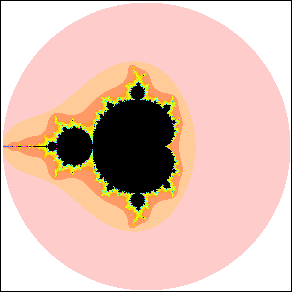

| The Mandelbrot set is defined using multiplication and addition of complex numbers. |
| To compute an image of the Mandelbrot set, for each c start with
z0 = 0
and generate the sequence z1, z2,
z3, ... by the basic iteration rule |
| zn+1 = zn2 + c |
| If the sequence does not run away to infinity, then the point
c belongs to M; if the sequence does run away to infinity, then
c does not belong to M. |
| This rule can be recast as a formula involving only real numbers |
| xn+1 = xn2 - yn2 + a |
| yn+1 = 2xnyn + b |
|
| by writing c = a + bi and zn = xn + iyn |
| We paint the pixel black if the sequence
produced by the c at its center does not run away to infinity, that is, if this c
belongs to M, and otherwise we paint the pixel a
color determined by how quickly the sequence gets farther
than 2 from the origin (and hence runs away to infinity). |
| For reference, here is a picture of the Mandelbrot
set. The pink circle is the circle of radius 2 centered at the origin. |
|  |